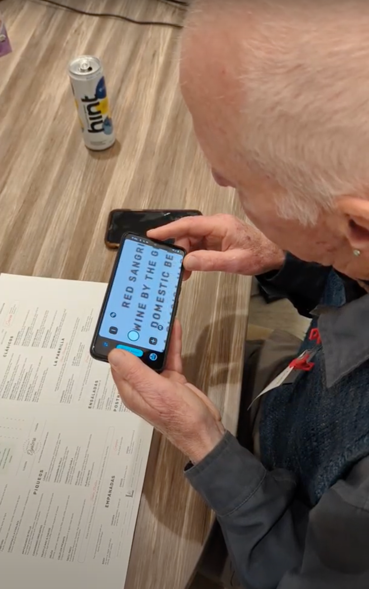
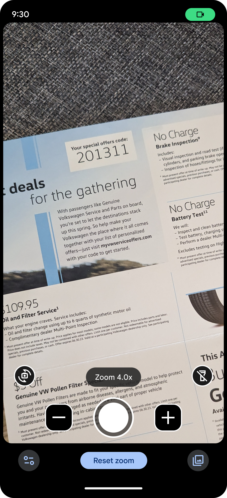
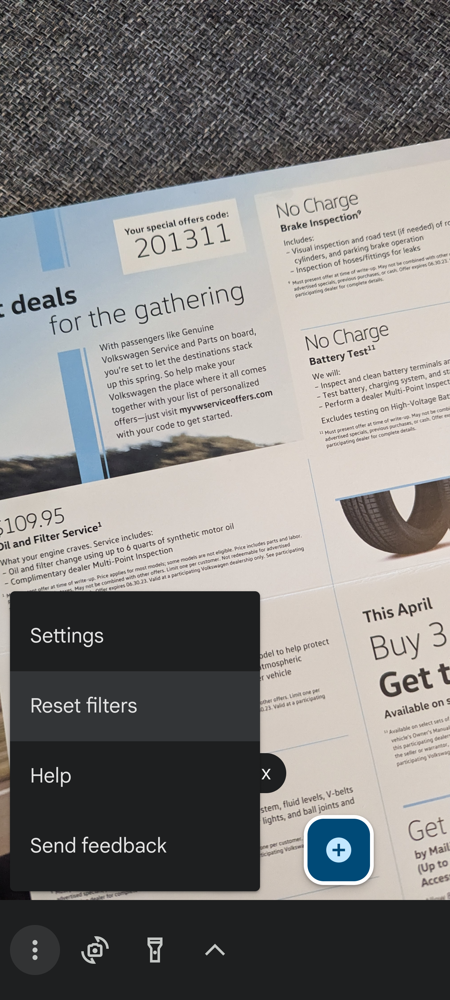
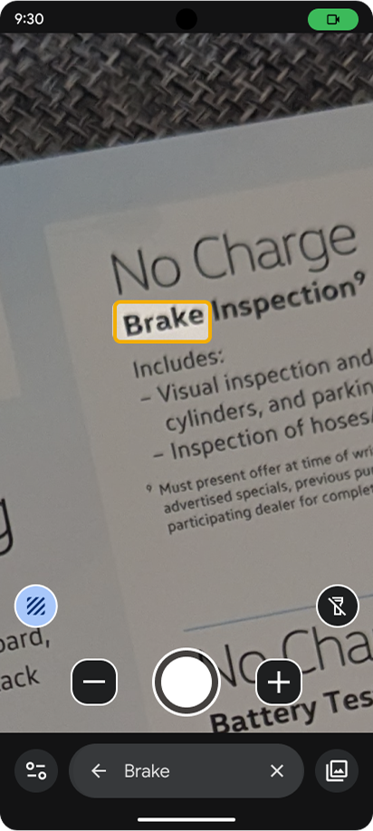

Google Pixel
Pixel Magnifier
4.8-star rating. The highest-rated Google-made app on Google Play. 154,000 people use it every month, most at maximum system magnification, holding the phone three inches from their face.
01 / ChallengeThe Challenge
Low-vision users read the world through their phone camera. Menus, mail, prescription labels. Pixel's magnifier was makeshift. iPhone had shipped a real one. My job was to ship a better one.
02 / ResearchDiscovery & Research
The insight that mattered came from sitting with users. Low-vision users hold the phone inches from their face, with system magnification at maximum. The screen isn't six inches. It's the size of a wall, and crossing it costs swipes.

03 / IterationDesign & Iteration
After the close-up insight, the design pretty much wrote itself. Spread-out concepts (the Camera-app pattern) failed in testing; every action was a multi-swipe trip across the wall. A tight cluster of controls at the bottom of the screen looked unbalanced in Figma. Held three inches from a face, it was the only layout that worked.


Clustered at the bottom, but icons and menu still too small. Failed in testing.

Bigger icons. Still too much horizontal travel with magnification cranked.

Tight cluster of controls at the bottom. Predictable, no horizontal travel. The layout that shipped.
04 / ConvictionDesigning Against Assumptions
The bottom-cluster layout was the right answer. It was not an easy sell internally.
Google's design system has opinions: top app bar for overflow, expressive typography, visual curves. Good defaults. But defaults shaped by users who don't hold the phone three inches from their face. At that distance, a button at the top of the screen isn't inconvenient. It's hidden.
What moved leadership wasn't a design rationale. It was video. Session recordings of users at maximum system magnification, every UI tap a multi-swipe expedition. After that, the abstract argument went away. The bottom-cluster layout wasn't a deviation from good design. It was what good design looked like for this user.
05 / Live SearchLive Search
Solving the layout got low-vision users to the controls. It didn't solve what they were trying to do once they got there.
The actual task (scanning a menu, a label, a sign) still meant sweeping the phone line by line. I couldn't reformat the menu. I couldn't reorganize the grocery aisle. I could eliminate the scanning.
Live Search: type or say a word, scan with the camera, Magnifier highlights it the moment it lands in the frame. The interaction pattern is YouTube's: familiar, fast on repeated lookups, easy to operate one-handed. Asking users to learn a new search paradigm on top of everything else was off the table.
The response was immediate:
"Found it right away. And how easy could that be? That, I mean, that is awesome. That is convenient."
User Research Participant
06 / ImpactSolution & Impact
4.8 Star Rating
The highest-rated Google-made app on the Google Play Store. 154,000 monthly active users.
"This is (ahem) magnificent... I have it set up so two taps on the back of the phone open the magnifier, and I use it nearly every day."
Ron Lusk, 5-star Play Store Review
07 / ForwardWhat I'd Take Forward
Magnifier taught me that the most important accessibility research happens before you open Figma. The close-up perspective (watching how users hold the phone) changed the entire design direction. No pattern library review would have surfaced it.
This is the kind of design work I bring to consulting engagements. If you're building products for disabled users or older adults, let's talk.